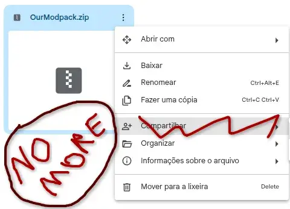

MODU-PDATER Launcher (update)
- Downloads
- 467
- Favourites
- 8
- Mod lists
- 4
MODU-PDATER
update if you downloaded the 1.0.5 ver, I forgot to add the languages into the exported file
This isn’t a GAME MOD!
This is a client / launcher that allows you to make it simpler and easier for your friends to have the same mods as you. It doesn’t collect data or add in game contents on its own!
Why did I make it? well I got tired of uploading the .zip(s) at the Gdrive and asking each one of my friends to download and extract so I made the launcher to make it easier for me to manage the mods and for them!
Features
- Incremental Patch
- Changelog display
- One click Update
Installation
- Put the exe in the SPT folder ( optional )
- Open the .exe ( Doesn’t need any admin needs )
- Open Settings
-
- Put the servers IP
Example: http://102.169.0.15:8080
-
- Put the SPT Path
Example: D:\SPT
-
- Save it
- Now It will check the updates!
Important notes:
- Don’t connect on random servers! Just use your friends one!
- TIP for the server owner: you don’t need to put the
spt/user/modsmods (I think, someone with more experience can correct me) - Other tip for server owners! You can put your
spt/user/cacheonto the modpack to make the bundles downloads faster ( needs further testing but worked 1 time at least )
Server:
To host your own update server you need:
https://github.com/Hashimini/SPTMODU-PDATERpanel (or make your own)
Source Code
Version
1.0.6
First (real) release of the launcher
Installation
- Download the File
- Place the MODU-PDATER file to any folder you want. (Recomend the SPT folder)
- On the first launch, you will need to configure:
- Server IP/URL
- SPT installation path
- Click Update and let it download
If you want to host you can just use the server.py in the zip file or read the https://github.com/Hashimini/SPTMODU-PDATERpanel for a better guide